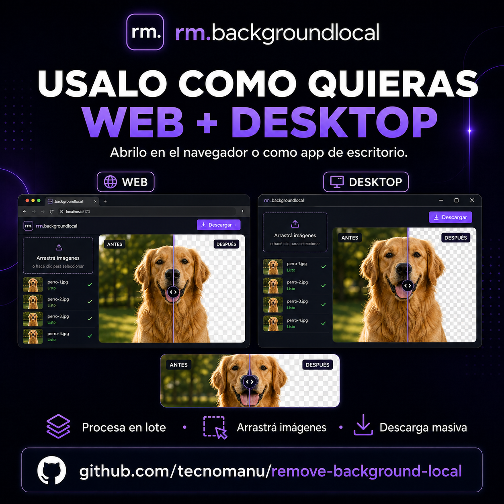
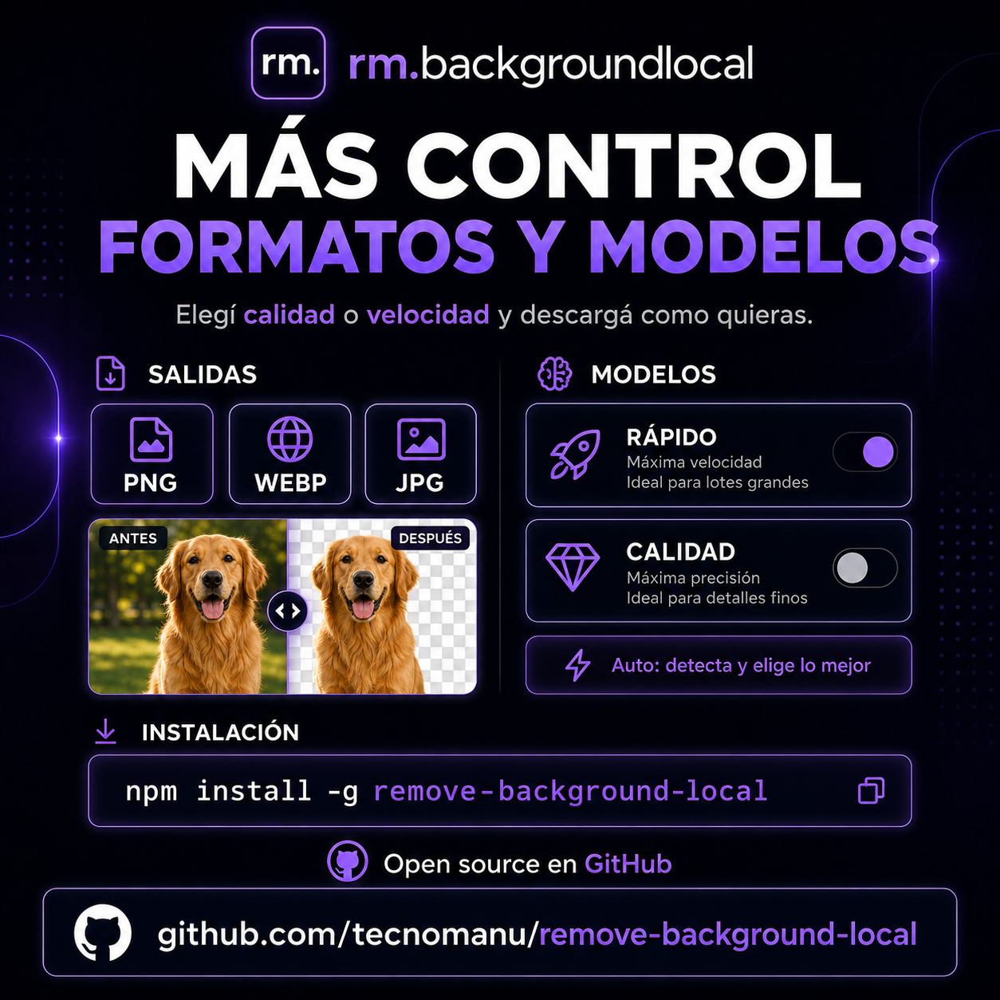

No internet
Works offline, even in airplane mode.
An offline alternative to remove.bg that runs entirely on your machine. Your images never leave your PC. No cloud, no accounts, no API.
Drag to compare · real model output
Your images are never uploaded to external servers. Ever.
Works offline, even in airplane mode.
100% on-device processing.
No sign-up required to use it.
No keys. No third parties.
From one image to hundreds. No limits on count or resolution.
Drop several images at once and they process one by one. Each result in its own card — nothing gets overwritten.
Your results are saved locally and grouped into sessions. They survive reloads until you delete them.
Download in any format, with a transparent background or a solid color. Per image or all at once.
ISNet by default (fast and great) and BiRefNet 2024 for maximum quality. Pick per use case.
Fine-edge mode for hair, plants and meshes. Tune the thresholds for surgical results.
Use it in the browser or as a native app with rm-bg desktop (Electron). Same UI, no browser tabs.
Approximate time per image on Apple Silicon (CPU).
isnet-general-usedefaultFast and great quality for any image.~1su2netThe classic — good for simple products.~0.5su2net_human_segPeople only.~0.5sbirefnet-general-liteMore quality, still reasonable.~9sbirefnet-generalBest quality for any image.~20sbirefnet-portraitPeople, top quality (tricky hair).~20sThe model runs on your own machine. Your images are never uploaded to any server: it works offline and nothing lingers in the cloud.

Open it in the browser or install it as a desktop app with the same interface. Drop several images at once, watch the progress, and download them all when it's done.

Choose speed or quality and export however you need: PNG, WEBP or JPG, with a transparent background or a solid color. Switch models depending on the image.
What matters: clean cutouts even on hair and tricky edges, in seconds and 100% local. Compare before and after instantly with the slider.
You need Node.js and Python 3.9+ already installed.
npx -y remove-background-localDownloads it temporarily, runs it and opens 127.0.0.1:7860. Leaves nothing installed.
rm-bg)npm install -g remove-background-localrm-bg web # or: rm-bg desktopInstalls the rm-bg command system-wide. Ideal for regular use and the desktop app.
git clone …/remove-background-localcd remove-background-local && ./run.shThe first run creates the environment and downloads the dependencies.
No limits, no account, no API. Open source and free.